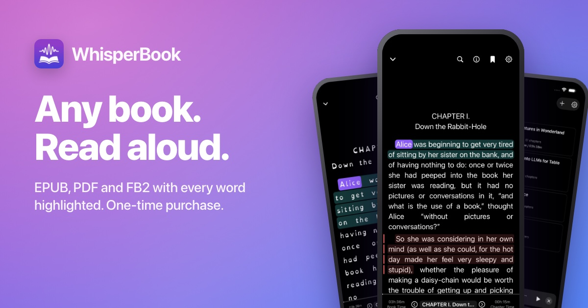

Press kit
Everything you need to write about WhisperBook. All images on this page may be used in articles and reviews about the app.
Fact sheet
- Name
- WhisperBook: Read Aloud & EPUB
- Platforms
- iPhone and iPad (iOS and iPadOS 18 or later), including the foldable iPhone Duo
- Price
- Free download. WhisperBook Pro is a one-time $14.99 in-app purchase, with a free 3-day trial. No subscription.
- Formats
- EPUB, PDF, FB2 (including .fb2.zip and .fbz)
- Languages
- English, German, Spanish, French, Italian, Portuguese, Romanian, Russian
- Privacy
- No account, no analytics, no tracking. Books stay on the device. Privacy policy
- App Store
- apps.apple.com/app/id6759533461
Short description
WhisperBook turns EPUB, PDF and FB2 books into audiobooks on iPhone and iPad, highlighting every word as it reads. One-time purchase, no subscription.
Long description
WhisperBook is a read-aloud app for people who would rather listen, or who read better when they hear and see the text at the same time. Import an EPUB, PDF or FB2 file and WhisperBook reads it aloud with the voices built into iOS, moving a highlight across each word and sentence so the reader never loses their place.
It was designed with dyslexic readers in mind: the OpenDyslexic font, wide letter and line spacing, and adjustable speed are free for everyone. Two free catalogs are built in, public-domain books from Project Gutenberg and research papers from arXiv, and a Safari share extension reads any web page aloud.
WhisperBook needs no account, sends no data anywhere and works offline. WhisperBook Pro, which adds unlimited imports, all voices and premium themes, is a single purchase that covers iPhone and iPad and supports Family Sharing.
Key features
- Reads EPUB, PDF and FB2 aloud with real-time word and sentence highlighting
- OpenDyslexic font and adjustable spacing, free for everyone
- Free catalogs: Project Gutenberg books and arXiv research papers
- Clean PDF listening that skips page numbers, headers and footers
- Read Aloud share extension for Safari pages and selected text
- Continue Listening Home Screen widget
- Speed from 0.5x to 3x, lock screen controls, sleep timer, bookmarks and search
Images
- App icon (PNG, 512×512)

Banner (JPEG, 1200×630) Reader (WebP, 1200×1300)
Reader (WebP, 1200×1300) Dyslexia (WebP, 1200×1300)
Dyslexia (WebP, 1200×1300) Catalog (WebP, 1200×1300)
Catalog (WebP, 1200×1300)


Please don't alter the app icon. Apple, iPhone, iPad and App Store are trademarks of Apple Inc.
Contact
For press questions, review requests or offer codes for testing Pro, open an issue on the WhisperBook support page on GitHub.